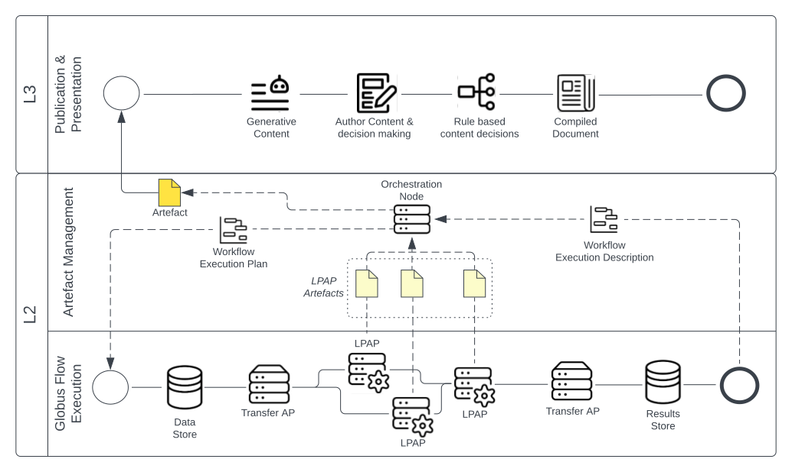

![]()
flowchart LR data_store[(Data store)] --> transfer_ap[Transfer AP] transfer_ap --> ft[[fastText LPAP]] & ld[[langdetect LPAP]] ft & ld --> transfer_ap2[Transfer AP] transfer_ap2 --> stats[[Statistics LPAP]] stats --> transfer_ap3[Transfer AP] transfer_ap3 --> results_store[(Results store)] click transfer_ap "http://130.216.217.137:8080/#DS_fastText_Transfer.py" "Go to transfer 1" click ft "http://130.216.217.137:8080/#fastText.py" "Go to fastText LPAP" click transfer_ap2 "http://130.216.217.137:8080/#fastText_statistics_transfer.py" "go to transfer 2" click ld "http://130.216.217.137:8080/#langdetect.py" "Go to langdetect LPAP" click transfer_ap_3 "http://130.216.217.137:8080/#langdetect_statistics_transfer.py" "Go to transfer 3" click stats "http://130.216.217.137:8080/#statistics.py" "Go to statistics LPAP"
Language identification method comparison
Introduction
Welcome to our LivePublication demonstration! The landscape of scientific research is ever-evolving, and with it, the way we share and consume scientific knowledge needs to progress. Traditional scientific publishing, with its static format, often struggles to effectively convey the dynamic nature of modern computational research. This article represents initial steps toward enabling and standardising methods of integrating distributed scientific workflows with top level narrative text, building a pipeline from workflow execution, to publication outputs.
Green links indicate links to the underpining orchestration crate.
The LivePublication framework aims to enable live, reactive publications while simultaneously enhancing transparency, repeatability, and collaborative scientific research. In order to achive this, LivePublication leverages custom Globus action providers (AP overview, custom AP) to simultaniously perform work within workflows, and generate descriptive RO-Crates.
Subsequently, these individual artefacts come together to form an ‘orchestration crate’. This crate offers a comprehensive description of the workflow execution, cataloging inputs, outputs, methods, and associated metadata.
The generated orchestration crate serves as a data model for publications, exemplified by this website, which offers live updates to figures, metrics, and other metadata. The design, captured metadata, and integration techniques with the publication are all areas currently being refined. For a deeper exploration of this method, refer to this article.
For an overview of the publication pipeline behind this article, see Figure 1. It’s important to mention that the methods featured within Layer 3, pertaining to publication and presentation, are showcased for demonstration only. We are actively researching the transition from the orchestration crate to the final compiled article.

A browseable version of the orchestration crate can be found here for demonstration purposes.
Globus flow, and orchestration crate generation
Find a simple representation of the Globus flow below. Each node in the flow diagram provides a link to execution details within the orchestration crate.
Click on each component to be directed to the relevant orchestration crate component.
Reactive publications and programmatic articles
This section provides examples of how we can leverage live data to create variable, or dependent text. There are many plausable methods for how variable content can be implemented. At its most basic, switch or if statements can be used to include/exclude information dependent on a combination of variables. More complex applications include hybrid LLM/Author NL generation, providing more flexible outputs.
Code
Modifying these parameters changes the data-model, and therefore the outputs of this article.
Variable text
A simple example of variable text is provided below. Depending on the relative accuracy results of each model (fastText, langdetect) the content changes.
Code
accuracy_conclusion = {
if (fastText_acc > langdetect_acc) {
return `FastText achieved a greater accuracy, achieving ${fastText_acc}% compared to langdetect, which achieved ${langdetect_acc}%`
} else if (fastText_acc < langdetect_acc) {
return `Langdetect achieved a greater accuracy, achieving ${langdetect_acc}% vs fastText's ${fastText_acc}%`
} else {
return `FastText and langdetect both achieved the same accuracy: ${fastText_acc}%`
}
}
Variable Text
Delimited variables and dashboard-like functionality
Rather than a simple switch statement as above, we can provide alerts if variables exit a delimited range, or the relationship between variables changes.
Code
fastText_limit = {
function isInRange(value, lowerBound, upperBound) {
return value >= lowerBound && value <= upperBound;
}
let fastText_lower = 90;
let fastText_upper = 100;
if (!isInRange(fastText_acc, fastText_lower, fastText_upper)) {
return `Not in Range: ${fastText_acc}% is outside the range of ${fastText_lower}% - ${fastText_upper}%`
} else {
return `Within Range: ${fastText_acc}% is within the range of ${fastText_lower}% - ${fastText_upper}%`
}
}Code
langdetect_limit = {
function isInRange(value, lowerBound, upperBound) {
return value >= lowerBound && value <= upperBound;
}
let langdetect_lower = 90;
let langdetect_upper = 100;
if (!isInRange(langdetect_acc, langdetect_lower, langdetect_upper)) {
return `Not in Range: ${langdetect_acc}% is outside the range of ${langdetect_lower}% - ${langdetect_upper}%`
} else {
return `Within Range: ${langdetect_acc}% is within the range of ${langdetect_lower}% - ${langdetect_upper}%`
}
}
fastText accuracy limit
fastText accuracy limit
LID performance comparison
While future LivePublication applications will primarily focus on how author-driven content can be realistically, and seamlessly integrated with live updating articles, this article uses mostly generative content drawing on data exported from the orchestration crate. Research on how the author and live content can be integrated is ongoing. Below, GPT-4 provides a short description of the results of this computational workflow, drawing on data generated during the flow. An overview of the LID comparison is provided in Figure 2.
- Model: GPT-4
- Prompt: This experiment compares the performance of two language identification methods: fastText and Langdetect. FastText’s results are results and langdetect results are results. Write a few paragraphs discussing the performance of each, comparing their best and worst language accuracies.
Generative Content
The evaluation of the language identification methods - fastText and Langdetect - reveals a nuanced performance profile contingent on the specific language being identified. Overall, the fastText model demonstrated superior performance with an overall accuracy of 98.6% compared to Langdetect’s 97.91%. This comparison, however, does not capture the individual variances in accuracy across languages for the two models.
Delving into these language-specific performances, FastText exhibits impeccable accuracy in identifying several languages. These include German (deu), Greek (ell), English (eng), French (fra), Japanese (jpn), Thai (tha), and Chinese (zho) - all at 100% accuracy. Other languages such as Bulgarian (bul), Italian (ita), Russian (rus), and Vietnamese (vie) also show remarkable results with accuracy close to 100%. FastText’s weakest performance is observed for Swahili (swa) at 85.4% accuracy, indicating a potential area for model improvement.
On the other hand, Langdetect also showcased impressive accuracy with several languages reaching 100% identification rate, namely Greek (ell), Japanese (jpn), Thai (tha), and Vietnamese (vie). It performed notably well with Arabic (ara), German (deu), and Turkish (tur) too, with accuracy rates nearing 100%. The lowest performance was observed with Dutch (nld) at 93.6%, signifying a potential area of focus for future model enhancements.
When comparing the two models on specific languages, FastText notably outperforms Langdetect in identifying languages such as Bulgarian, English, French, Dutch, Polish, Portuguese, and Spanish. Conversely, both models demonstrate equivalent performance in Arabic, Greek, Japanese, Thai, and Vietnamese identification. Langdetect’s performance appears to surpass FastText slightly in Hindi and Urdu.
Figure integration and generation
Figures and other visualisations can either be generated during the execution of a workflow, or implemented at the document level through code blocks. An example of both approaches is provided below.

This figure was generated during the statistics step of the workflow. Click to be directed to this component within the orchestration crate.
Figure 2, above, was generated within the workflow, however, as the orchestration crate contains the data generated via the workflow, we can generate these figures at the document level as well.
Code
This figure was generated within the Quarto document using data collected from the orchestration crate here and showcases how LivePublications can integrate with top-level code/narrative-text technologies (e.g. Quarto, Jupyter notebooks, Google colaboratory).
Code
visualisation = {
d3.csv("orchestration_crate/statistics_lpap/output/accuracy_by_language.csv").then(data => {
const container = d3.select("#d3-visualization");
const margin = { top: 40, right: 0, bottom: 10, left: 25 };
const svgWidth = container.node().getBoundingClientRect().width;
const barHeight = 5; // example height for each set of bars (FastText + Langdetect for a language)
const barSpacing = 10; // space between each set of bars
const calculatedHeight = data.length * (barHeight + barSpacing) + margin.top + margin.bottom;
const svgHeight = calculatedHeight; // use calculated height instead of fixed height
const width = svgWidth - margin.left - margin.right;
const height = svgHeight - margin.top - margin.bottom;
const x0 = d3.scaleBand()
.domain(data.map(d => d.Language_ID))
.rangeRound([margin.left, width - margin.right])
.paddingInner(0.1);
const x1 = d3.scaleBand()
.domain(['FastText', 'Langdetect'])
.rangeRound([0, x0.bandwidth()])
.padding(0.05);
const y = d3.scaleLinear()
.domain([0, 100]).nice()
.rangeRound([height - margin.bottom, margin.top]);
const color = d3.scaleOrdinal()
.domain(['FastText', 'Langdetect'])
.range(['#1f77b4', '#ff7f0e']);
const xAxis = g => g
.attr("transform", `translate(0,${height - margin.bottom})`)
.call(d3.axisBottom(x0).tickSizeOuter(0))
.call(g => g.select(".domain").remove());
const yAxis = g => g
.attr("transform", `translate(${margin.left},0)`)
.call(d3.axisLeft(y).ticks(null, "s"))
.call(g => g.select(".domain").remove());
const svg = container.append("svg")
.attr("width", svgWidth)
.attr("height", svgHeight)
.style("margin-bottom", "10px"); // Reduce space below the SVG
const title = "Accuracy Comparison: FastText vs. Langdetect"; // Replace with your desired title
svg.append("text")
.attr("x", svgWidth / 2) // Center the text
.attr("y", margin.top / 2) // Position it at the top, within the top margin
.attr("text-anchor", "middle") // Ensure the text is centered at the position
.style("font-size", "20px") // Set font size
.style("font-weight", "bold") // Make it bold
.text(title);
// Tooltip
const tooltip = d3.select("body").append("div")
.attr("class", "tooltip")
.style("opacity", 0)
.style("background-color", "white")
.style("border", "solid")
.style("border-width", "2px")
.style("border-radius", "5px")
.style("padding", "5px")
.style("position", "absolute");
const barGroups = svg.append("g")
.selectAll("g")
.data(data)
.join("g")
.attr("class", "barGroup")
.attr("transform", d => `translate(${x0(d.Language_ID)},0)`);
barGroups.selectAll("rect")
.data(d => ['FastText', 'Langdetect'].map(key => ({ key, value: d[key] })))
.join("rect")
.attr("x", d => x1(d.key))
.attr("y", d => y(d.value))
.attr("width", x1.bandwidth())
.attr("height", d => y(0) - y(d.value))
.attr("fill", d => color(d.key))
.on("mouseover", function(event, d) {
const originalColor = d3.select(this).attr("fill");
d3.select(this)
.attr("data-original-color", originalColor) // Store the original color
.attr("fill", d3.rgb(originalColor).darker(2));
tooltip.transition()
.duration(200)
.style("opacity", .9);
tooltip.html(d.key + ": " + d.value + "%")
.style("left", (event.pageX + 5) + "px")
.style("top", (event.pageY - 28) + "px");
})
.on("mouseout", function(d) {
const originalColor = d3.select(this).attr("data-original-color");
d3.select(this)
.attr("fill", originalColor) // Reset to the original color
.attr("data-original-color", null); // Clear the data attribute
tooltip.transition()
.duration(500)
.style("opacity", 0);
});
svg.append("g")
.call(xAxis);
svg.append("g")
.call(yAxis);
// Sorting functions
function sortByFastText() {
data.sort((a, b) => b.FastText - a.FastText);
x0.domain(data.map(d => d.Language_ID));
svg.selectAll(".barGroup").transition().duration(1000).attr("transform", d => `translate(${x0(d.Language_ID)},0)`);
// Update button styles
d3.selectAll("button").filter(function() { return d3.select(this).text() === "Sort by FastText"; }).style("background-color", color('FastText'));
d3.selectAll("button").filter(function() { return d3.select(this).text() === "Sort by Langdetect"; }).style("background-color", "#f4f4f4");
}
function sortByLangdetect() {
data.sort((a, b) => b.Langdetect - a.Langdetect);
x0.domain(data.map(d => d.Language_ID));
svg.selectAll(".barGroup").transition().duration(1000).attr("transform", d => `translate(${x0(d.Language_ID)},0)`);
// Update button styles
d3.selectAll("button").filter(function() { return d3.select(this).text() === "Sort by Langdetect"; }).style("background-color", color('Langdetect'));
d3.selectAll("button").filter(function() { return d3.select(this).text() === "Sort by FastText"; }).style("background-color", "#f4f4f4");
}
// Styling function for buttons
function styleButton(button) {
button.style("padding", "5px 10px")
.style("margin", "5px")
.style("cursor", "pointer")
.style("border", "1px solid #888")
.style("background-color", "#f4f4f4")
.style("border-radius", "5px")
.style("text-align", "center")
.on("mouseover", function() {
const currentColor = d3.select(this).style("background-color");
if (currentColor === "rgb(244, 244, 244)") { // Check if the current color is the default
d3.select(this).style("background-color", "#e0e0e0");
}
})
.on("mouseout", function() {
const currentColor = d3.select(this).style("background-color");
if (currentColor === "rgb(224, 224, 224)") { // Check if the color was changed on hover
d3.select(this).style("background-color", "#f4f4f4");
}
});
}
// Add sort buttons
const sortButtons = container.append("div")
.style("margin-bottom", "5px") // Reduce space below the sort buttons
.style("text-align", "left"); // Ensure left alignment
styleButton(sortButtons.append("button").text("Sort by FastText").on("click", sortByFastText));
styleButton(sortButtons.append("button").text("Sort by Langdetect").on("click", sortByLangdetect));
// Interactive Legends
const legend = container.append("div")
.attr("class", "legend")
.style("display", "flex")
.style("justify-content", "flex-start") // Align the legend to the left
.style("margin-bottom", "10px"); // Add some space below the legends for clarity
const tools = ['FastText', 'Langdetect'];
tools.forEach(tool => {
const legendButton = legend.append("div").style("margin", "0 10px");
const colorBox = legendButton.append("span")
.style("background-color", color(tool))
.style("width", "20px")
.style("height", "20px")
.style("display", "inline-block")
.style("margin-right", "5px");
const toolName = legendButton.append("span")
.text(tool)
.style("cursor", "pointer")
.on("click", function() {
const isActive = !d3.select(this).classed("inactive");
d3.select(this).classed("inactive", isActive);
if (isActive) {
colorBox.style("opacity", "0.5");
toolName.style("text-decoration", "line-through");
} else {
colorBox.style("opacity", "1");
toolName.style("text-decoration", "none");
}
svg.selectAll(".barGroup")
.selectAll("rect")
.filter(d => d.key === tool)
.transition()
.duration(300)
.style("opacity", isActive ? 0 : 1);
});
styleButton(legendButton);
});
});
}Workflow / Method description
Below is a very early attempt at generative content based on the generated Workflow Execution Plan (WEP). The WEP only provides a description of the Globus flow, and includes no information regarding the actual execution of the method. Including details from the Workflow Execution Description (WED) can further enhance the description including things like execution state (succeeded, failed), time taken per step, and other pertinent information.
- Model: GPT-4
- Prompt: Generate a description of this workflow, from the perspective of an academic methodological section: WEP
Generative Content
The methodology to compare the performance of two language identification models, fastText and langdetect, involves the execution of a series of actions within a structured workflow. The actions range from data transfer operations to the execution of language identification models and statistical analysis of the generated results. The overall flow is organized as follows:
Data Transfer for fastText Model: The process begins by transferring the required dataset from the data store to the location accessible by the fastText model. This is done using Globus, a high-speed data transfer protocol. The specific parameters of this operation such as the source and destination endpoint identifiers, along with the respective paths are supplied at runtime.
fastText Model Execution: With the data in place, the fastText language identification model is executed. The model reads the input data from the path specified in the previous step, performs language identification, and stores the result in the same location.
Result Transfer for fastText Model: The output of the fastText model, including statistics related to its performance, is then transferred back to the data store via another Globus transfer operation.
Data Transfer for langdetect Model: Similarly to step 1, the required dataset is transferred from the data store to the location accessible by the langdetect model using a Globus transfer operation.
langdetect Model Execution: The langdetect model is then executed, processing the transferred data to perform language identification. The results of the model are stored in the designated location.
Result Transfer for langdetect Model: The results of the langdetect model, including its performance statistics, are then transferred back to the data store via Globus transfer operation.
Statistical Analysis: With the results from both models in place, a statistical analysis is performed to compare their performances. The analysis includes accuracy statistics, and the generation of figures, tables, and other representations of the results for presentation in the publication layer.
Statistics Transfer to the Data Store: Finally, the results of the statistical analysis are transferred back to the data store using another Globus transfer operation.
Each of these operations is executed asynchronously, with designated wait times to ensure the completion of each task before moving to the next. The process has been designed for scalability and efficiency, with a focus on managing data and computational resources effectively.
Method description generation experiement
Each LPAP contains a method directory including the docker image and associated scripts. Using these, we can attempt to generate descriptions of the method in NL. This is an early experiement into the performance/accuracy of such a method.
FastText LPAP
Code
import os
import fasttext
import codecs
import sys
# Directory constants
BASE_DIR = os.path.dirname(os.path.abspath(__file__))
INPUT_DIR = os.environ.get("INPUT_DIR", os.path.join(BASE_DIR, "input"))
OUTPUT_DIR = os.environ.get("OUTPUT_DIR", os.path.join(BASE_DIR, "output"))
if __name__ == "__main__":
with codecs.open(sys.argv[1], "r", encoding = "utf-8") as f:
lines = f.readlines()
#LID2 Constants
model = fasttext.load_model("model.lid.top800.epoch20.neg100.dim100.ns.small.min5.ftz")
predictions = []
for line in open(sys.argv[1]):
# strip \n from line
line = line.rstrip("\n")
pred_label = model.predict(line)
predictions.append(pred_label)
# write predictions to file
with open(f"{OUTPUT_DIR}/fastText_predictions.txt", "w") as f:
for pred in predictions:
# Write prediction to file, and remove __label__ prefix
f.write(pred[0][0].replace("__label__", "") + "\n")
Generative Content
FastText is a library for text classification and representation learning, created by Facebook’s AI Research lab. This script loads a FastText model trained to classify text and then uses this model to predict the class of each line of an input text file.
Here’s a step-by-step breakdown:
- The script begins by setting up necessary directories. The base directory (
BASE_DIR) is set as the directory where this script is located.INPUT_DIRandOUTPUT_DIRare then defined as subdirectories of the base directory. - In the main execution block (
if name == "main":), the script first opens an input file (sys.argv[1]) with read access using the codecs library, which allows the script to handle text encoded in UTF-8. The content of the file is read line by line into the lines variable. - A pre-trained FastText model is loaded from a file named
model.lid.top800.epoch20.neg100.dim100.ns.small.min5.ftz. This model is trained to predict the class of a line of text. - The script then iterates through each line in the input file again. For each line, any newline character () at the end of the line is removed using
rstrip(""). The cleaned line is then fed to the FastText model to generate a prediction. Each prediction is appended to the predictions list. - Finally, all the predictions are written to a file in the output directory named
fastText_predictions.txt. Each prediction is written on a new line, with any “label” prefix removed.
In the context of the workflow, this script follows the DS_fastText_Transfer state where the necessary files are transferred to the appropriate location. The output of this script, fastText_predictions.txt, is used in the final statistics state of the workflow to compute accuracy statistics.
langdetect LPAP
Code
from langdetect import DetectorFactory, detect, detect_langs
import os
import codecs
import sys
# Directory constants
BASE_DIR = os.path.dirname(os.path.abspath(__file__))
INPUT_DIR = os.environ.get("INPUT_DIR", os.path.join(BASE_DIR, "input"))
OUTPUT_DIR = os.environ.get("OUTPUT_DIR", os.path.join(BASE_DIR, "output"))
if __name__ == "__main__":
# Read input lines
with codecs.open(sys.argv[1], "r", encoding = "utf-8") as f:
lines = f.readlines()
# Write predictions to file
with open(f"{OUTPUT_DIR}/langdetect_predictions.txt", "w") as f:
for line in lines:
line = line.strip() # Remove leading/trailing white space including '\\n'
if line: # Only process the line if it's not empty
try:
detected_language = detect(line)
f.write(detected_language + "\n")
except:
# In case of an exception, write an error line with the line content
f.write(f"error: {line} \n")
Generative Content
This Python script uses the langdetect library to determine the language of each line of text in an input file. The resulting predictions are then written to an output file.
Here’s a step-by-step breakdown:
- The script sets up necessary directories. The base directory (
BASE_DIR) is set as the directory where the script resides. The input directory (INPUT_DIR) and the output directory (OUTPUT_DIR) are then set as environment variables or default to the subdirectories “input” and “output” in the base directory, respectively. - In the main execution block (
if __name__ == "__main__":), the script begins by opening an input file (sys.argv[1]) with read access using the codecs library, enabling it to handle UTF-8 encoded text. The contents of the file are read line by line into the variable ‘lines’. - An output file named “langdetect_predictions.txt” is opened or created in the output directory.
- The script then starts processing each line in the ‘lines’ variable. It removes leading and trailing white spaces from each line. If the line is not empty, it increments a counter and tries to determine the language of the line using langdetect. The detected language or an error message (in case of failure) is then written to the output file.
In the context of the workflow, this script is executed in the ‘langdetect’ state. It comes after the ‘DS_langDetect_transfer’ state, where the necessary input file is transferred to the langdetect endpoint. The output of this script, “langdetect_predictions.txt”, is then used in the ‘statistics’ state of the workflow, where the accuracy of the langdetect and fastText predictions are compared.
Referencing
Some narrative text which includes a reference (Miller, Pfeiffer, and Schwartz (2011)). A small list of references:
References
Goecks, Jeremy, Anton Nekrutenko, James Taylor, and Galaxy Team. 2010. “Galaxy: A Comprehensive Approach for Supporting Accessible, Reproducible, and Transparent Computational Research in the Life Sciences.” Genome Biology 11: 1–13.
Miller, Mark A, Wayne Pfeiffer, and Terri Schwartz. 2011. “The CIPRES Science Gateway: A Community Resource for Phylogenetic Analyses.” In Proc. 2011 TeraGrid Conference: Extreme Digital Discovery, 1–8.
Uhrin, Martin, Sebastiaan P Huber, Jusong Yu, Nicola Marzari, and Giovanni Pizzi. 2021. “Workflows in AiiDA: Engineering a High-Throughput, Event-Based Engine for Robust and Modular Computational Workflows.” Computational Materials Science 187: 110086.
Vescovi, Rafael, Ryan Chard, Nickolaus D Saint, Ben Blaiszik, Jim Pruyne, Tekin Bicer, Alex Lavens, et al. 2022. “Linking Scientific Instruments and Computation: Patterns, Technologies, and Experiences.” Patterns 3 (10): 100606.